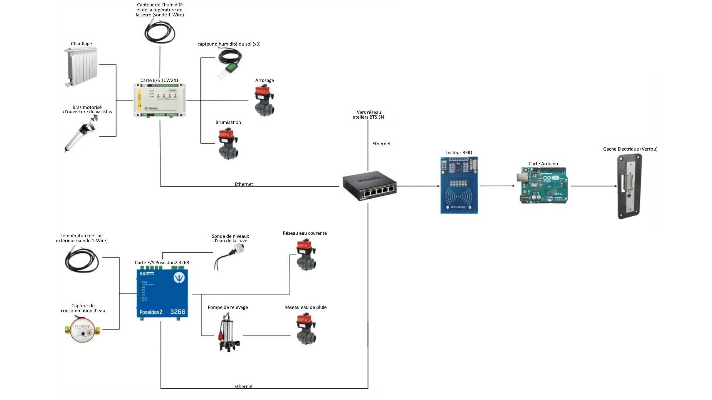
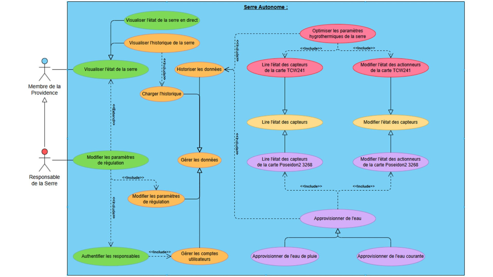
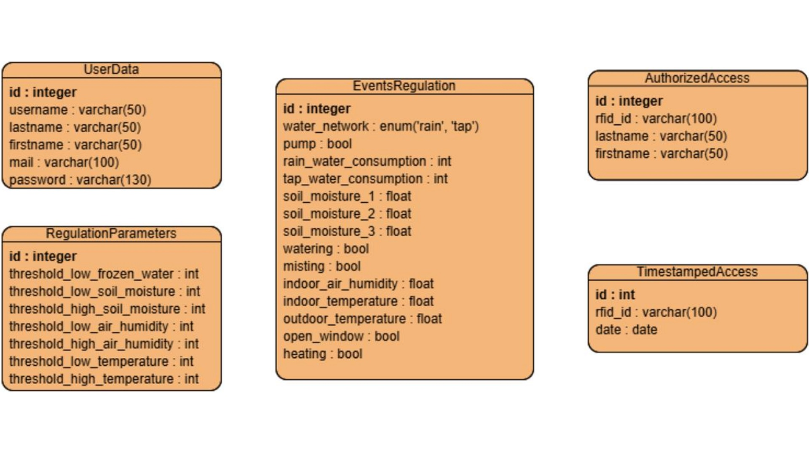
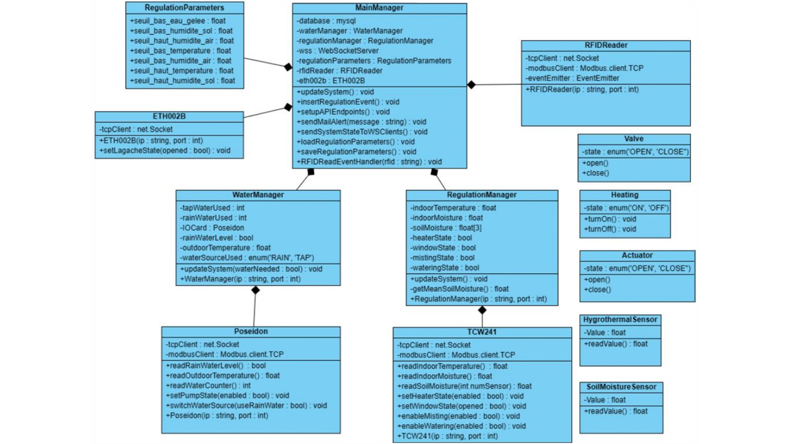

Regulation
Automatisée (Hygrothermie)
Automated (Hygrothermal)
Water Management
Pluie / Eau Courante
Rainwater / Tap Water
Access Control
Lecteur RFID & Arduino
RFID Reader & Arduino
Architecture de la Serre Connectée Connected Greenhouse Architecture
Le système est conçu autour d'une architecture réseau distribuée, où chaque sous-ensemble communique via un commutateur (switch) Ethernet central. L'intelligence du système est centralisée sur un serveur (Node.js) qui orchestre les échanges en utilisant principalement le protocole Modbus TCP. The system is designed around a distributed network architecture, where each sub-assembly communicates via a central Ethernet switch. System intelligence is centralized on a server (Node.js) that orchestrates exchanges using the Modbus TCP protocol.
1. Gestion Environnementale (TCW241) 1. Environmental Management (TCW241)
- Capteurs : Sonde 1-Wire (Temp/Air) et humidité sol.Sensors: 1-Wire probe (Temp/Air) and soil moisture.
- Actionneurs : Chauffage, brumisation, arrosage et vasistas.Actuators: Heating, misting, watering and window control.
2. Ressources et Extérieur (Poseidon2) 2. Resources and Exterior (Poseidon2)
- Suivi température extérieure et compteur d'eau.Outdoor temperature monitoring and water meter.
- Gestion pompe de relevage et bascule pluie/réseau.Lift pump management and rain/main water toggle.

Schéma synoptique de l'installation System synoptic diagram
Analyse Fonctionnelle (UseCase) Functional Analysis (UseCase)
Le diagramme de cas d'utilisation définit les interactions entre les différents acteurs (Membres de la Providence, Responsables) et le système automatisé. Il assure une séparation claire entre les fonctions de simple consultation et les droits d'administration critique. The Use Case diagram defines the interactions between various actors (Providence Members, Managers) and the automated system. It ensures a clear separation between monitoring functions and critical administration rights.
1. Droits de Consultation 1. Consultation Rights
- Visualisation de l'état de la serre en temps réel via l'interface web.Real-time visualization of the greenhouse status via web interface.
- Chargement et analyse de l'historique des mesures environnementales.Loading and analysis of environmental measurement history.
2. Droits d'Administration 2. Administration Rights
- Modification des seuils de régulation (Température, Humidité).Modification of regulation thresholds (Temperature, Humidity).
- Authentification RFID sécurisée pour le contrôle physique des accès.Secure RFID authentication for physical access control.

Diagramme des Cas d'Utilisation (UseCase) Use Case Diagram (UseCase)
Modélisation des Données (MCD) Data Modeling (MCD)
La base de données MySQL est le pilier de l'archivage et de l'intelligence du projet. Elle stocke non seulement les logs environnementaux mais aussi la configuration système et les accès de sécurité. The MySQL database is the pillar of the project's archiving and intelligence. It stores environmental logs as well as system configurations and security access logs.
1. Persistance de la Régulation 1. Regulation Persistence
- Table EventsRegulation : Historisation complète des cycles.Table EventsRegulation: Complete cycle logging.
- Table RegulationParameters : Stockage dynamique des seuils.Table RegulationParameters: Dynamic threshold storage.
2. Sécurité et Traçabilité 2. Security and Traceability
- Table AuthorizedAccess : Liste blanche des badges RFID autorisés.Table AuthorizedAccess: Whitelist of authorized RFID badges.
- Table TimestampedAccess : Journalisation horodatée des ouvertures.Table TimestampedAccess: Timestamped logs of access events.

Modèle Conceptuel de Donnée (MCD) Conceptual Data Model (MCD)
Architecture Logicielle (Classes) Software Architecture (Classes)
Le back-end en Node.js suit une conception orientée objet rigoureuse. Cette modularité permet d'encapsuler les protocoles de communication bas niveau (Modbus, TCP) dans des drivers réutilisables et testables. The Node.js back-end follows a rigorous object-oriented design. This modularity allows low-level communication protocols (Modbus, TCP) to be encapsulated in reusable and testable drivers.
1. Gestionnaires Métiers (Managers) 1. Business Managers
- WaterManager : Algorithmes de sélection de la source d'eau.WaterManager: Water source selection algorithms.
- RegulationManager : Logique de contrôle des variables hygrothermiques.RegulationManager: Control logic for hygrothermal variables.
2. Drivers et Hardware 2. Drivers and Hardware
- TCW241 / Poseidon : Abstraction des registres Modbus.TCW241 / Poseidon: Abstraction of Modbus registers.
- RFIDReader : Gestion asynchrone des événements de lecture.RFIDReader: Asynchronous handling of read events.

Diagramme de Classes (Backend Node.js) Class Diagram (Node.js Backend)
Défis & Résolution Challenges & Resolution
Problématique Initiale Initial Problems
Système obsolète avec câblages et borniers défectueux. Documentation technique Poseidon inexistante/obsolète pour le modèle spécifique utilisé. Outdated system with faulty wiring and terminals. Non-existent or obsolete Poseidon technical documentation for the specific model used.
Actions Correctives Corrective Actions
Audit complet de l'infrastructure, remise en état physique des capteurs. Reverse-engineering des trames Modbus brutes pour rétablir la communication avec le serveur. Complete infrastructure audit, physical repair of sensors. Reverse-engineering of raw Modbus frames to restore communication with the server.
Communication Modbus TCP Modbus TCP Communication
Le pilotage de la serre repose sur une gestion asynchrone des trames TCP. Cet extrait illustre l'encapsulation de la logique métier : lecture directe des registres, conversion des données binaires en valeurs physiques et gestion robuste des erreurs (timeout, socket). Greenhouse control relies on asynchronous management of TCP frames. This snippet illustrates the encapsulation of business logic: direct register reading, binary data conversion into physical values, and robust error handling (timeout, socket).
// CAPTEUR TEMPERATURE EXTERIEUR :
async readoutdoorTemperature() {
return new Promise((resolve, reject) => {
const client = new net.Socket();
client.setTimeout(5000);
// Trame TCP brute :'00 00 00 00 00 04 02 04 00 64 00 01'
const request = Buffer.from([
0x00, 0x00, // Transaction ID
0x00, 0x00, // Protocol ID
0x00, 0x04, // Length
0x02, // Unit ID
0x04, // Function Code (Read Input)
0x00, 0x64, // Register Address (100)
0x00, 0x01 // Quantity
]);
client.connect(this.port, this.ip, () => {
client.write(request);
});
client.on('data', (data) => {
const high = data[9];
const low = data[10];
const value = (high << 8) | low;
const outdoorTemperature = value / 10;
client.destroy();
resolve(outdoorTemperature);
});
client.on('error', (err) => {
client.destroy();
reject("Error TCP (Capteur Extérieur): "+ err.message);
});
client.on('timeout', () => {
client.destroy();
reject(new Error("Timeout - capteur extérieur"));
});
});
}